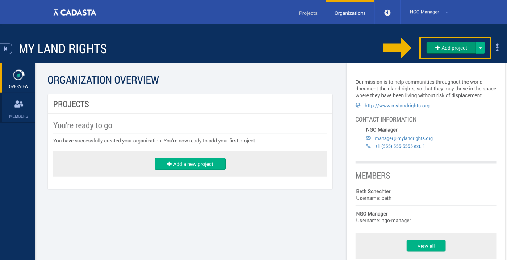
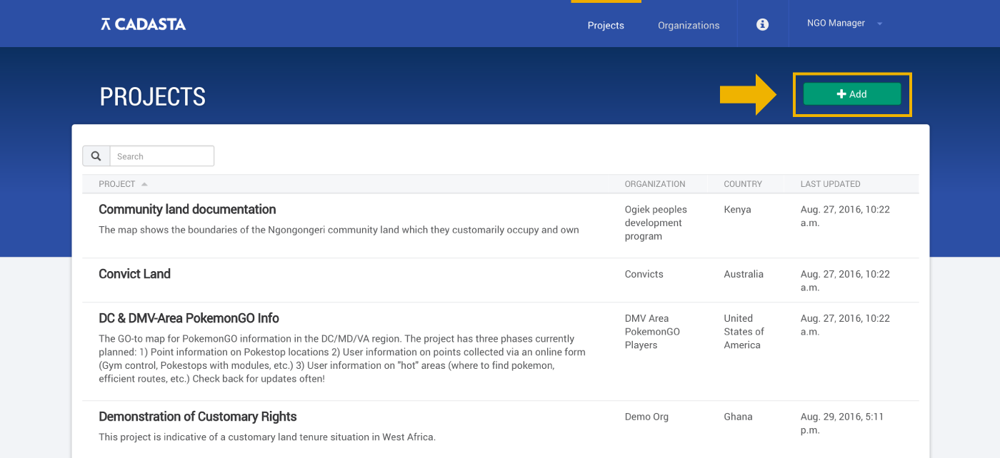
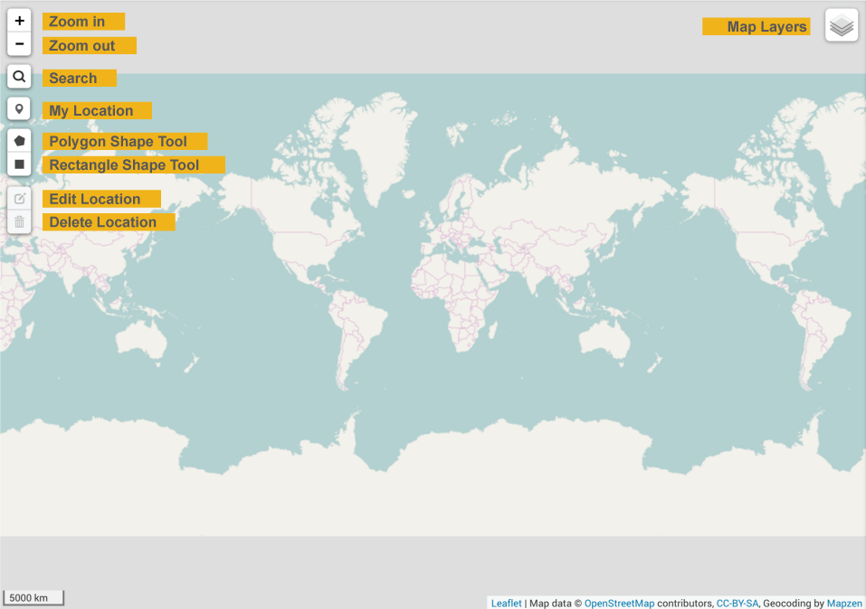
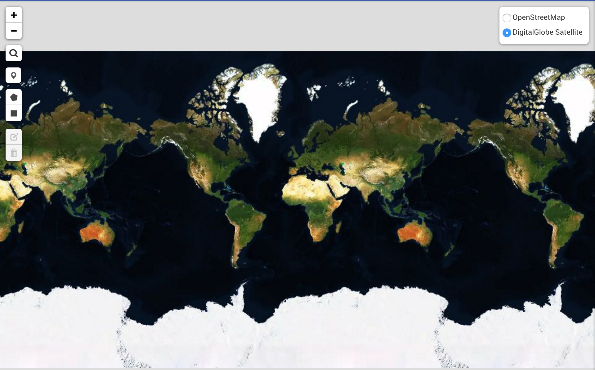
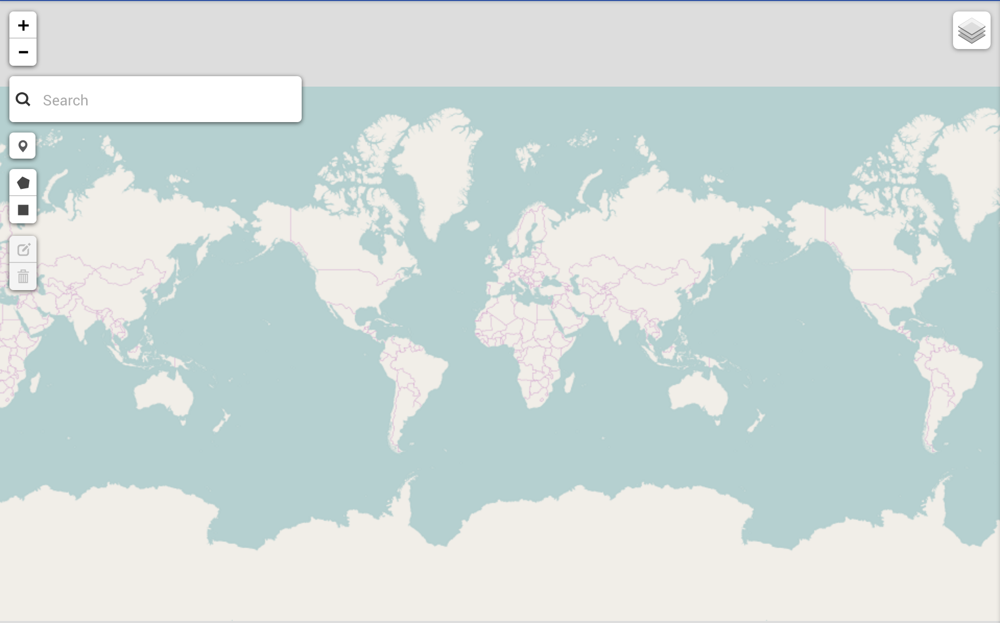
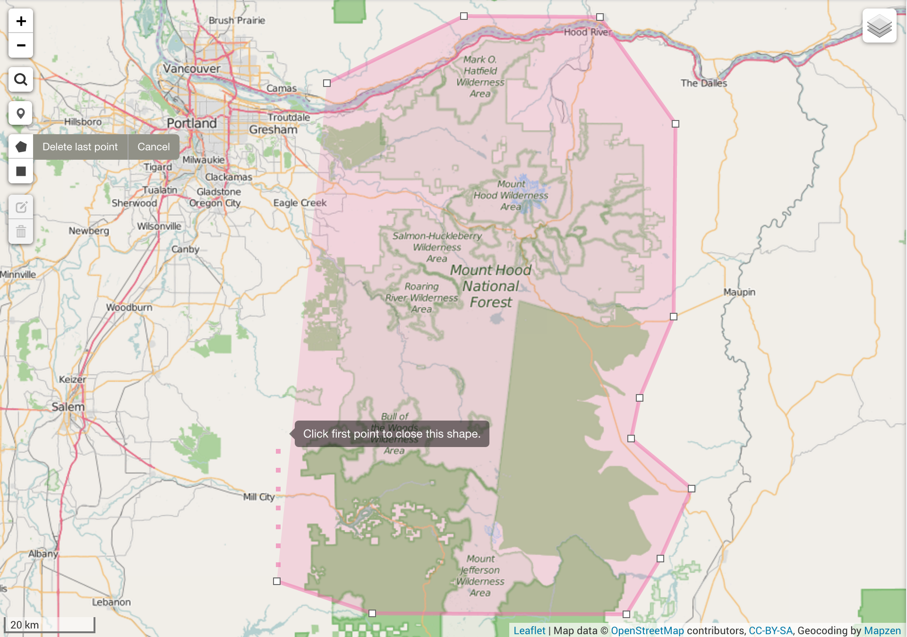
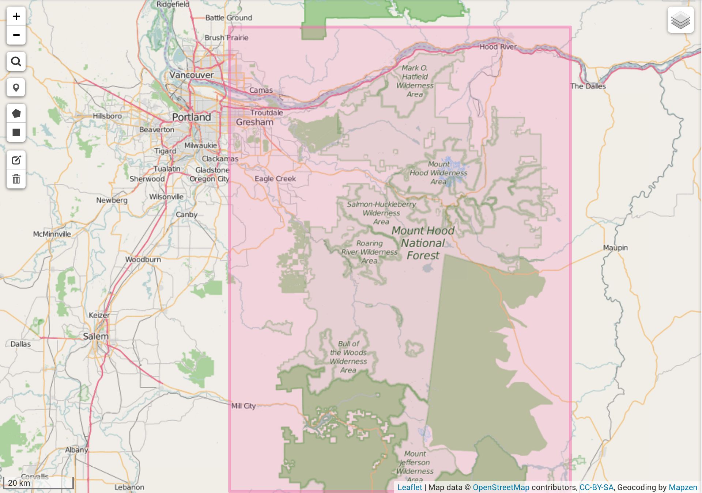
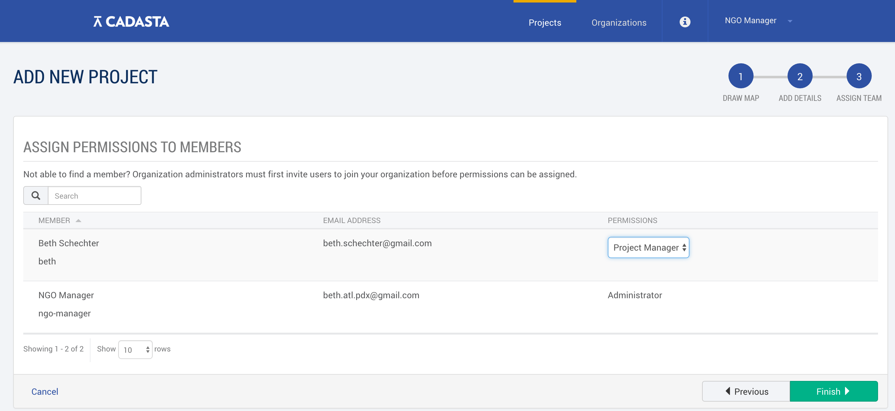
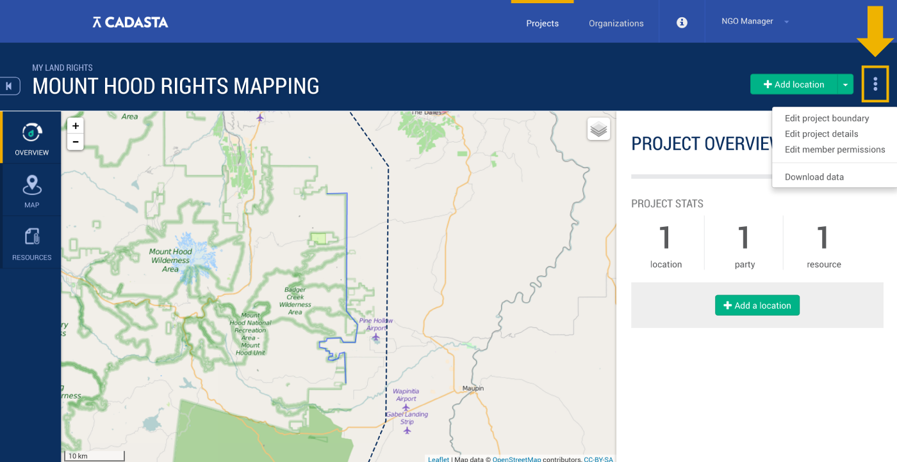
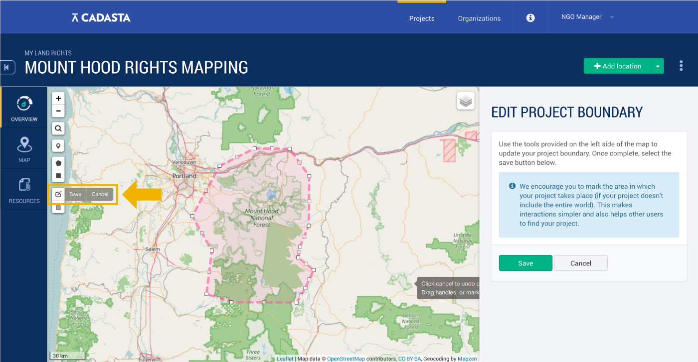

Projects
Overview
Within any organization, there may be any number of projects: initiatives to collect information about a series of locations in a given area. This section goes over how to create a new project in the Cadasta Platform, as well as how to edit it and assign member permissions for different projects.
Setting Up a New Project
Once your organization exists, administrators can start to add projects to it.
1. Navigate to the "Add project" button.
You can find the Add project button in one of two ways. The first way is from your Organization Overview page:

And the second way is by clicking the Projects button at the top of the page, and then clicking Add.

2. Navigate to your project area
Your project area is the geographic area where field data collection activities take place. You can find your area on the map using a couple different approaches.
a. Zooming from the map

From the map view, use the + and - signs on the upper left to zoom in and out.
In the upper right, you can choose from a couple of different layers depending on what kind of map you need.
The default layer is the graphic OpenStreetMap layer, shown above. You can also select the DigitalGlobe Satellite layer:

b. Search by a geographic Place Name
Click on the magnifying glass in the upper left to search for your location by name.

3. Create your project boundary.
The next thing you need to do is create your project boundary by drawing either a rectangle or polygon on the map.
Note that your project boundary does not need to be exact. To ensure full coverage, add a little bit of space outside the area where you'll be working.
To draw a polygon, click the polygon button. Then, start clicking points on the map to draw your shape.

You can edit your polygon by clicking the Edit Location button.
From there, you can click to add each point of your polygon and move it to its intended location. To close the polygon, click on the first point that you added.
To draw a rectangle, select the rectangle icon. Then, click and drag over your project area on the map.

To edit your project area, select the edit icon. Then, click and drag the points on your polygon or rectangle to their correct location. When you're done, click the gray Save button on the left
Once you've drawn your project area to your satisfaction, click the green Next button on the right.
Note that if your project is a global one, simply click the green Next button without drawing any polygons or rectangles.
4. Provide some general information about the project.
At this stage, you will be asked to fill out some General Information regarding the project, including:
Project name
Project privacy preference, or whether the project will be Public or Private. Public projects are viewable by anyone, whereas private projects are only available to members of your organization.
Project description
Project URL, which must start with http:// or https://
Project Questionnaire, a spreadsheet that serves as the basis for your data collection. It should not be heavily changed once your project is created. To learn more about how they work and get sample questionnaires, read the section on custom data collection
Project contacts, if any. These contacts do not have to be project members, but may be people who are important to the project. For example, you may be working with an administrator or communications specialist who is not involved with data collection, but who may have integral roles in what you're doing.
If you're adding a project by navigating from the Project page, you'll also be asked to select the project's organization from a dropdown menu at the top.
5. Assign Project Member Permissions
When you're done adding your general information, you can assign member permissions. Project members are members of your organization, and their permissions reflect their role in any given project.
To learn more about member permissions, see the Project Members & Member Permissions section below.

When you're done, congratulations! You've created your very first project.
Your next steps are to start collecting records for your project, including:
- project locations - all the parcels, buildings, boundaries and other locations relevant to your project;
- location relationships to parties that have some right or access to one or more of your locations, and
- resources like photos, deeds, and other documentation related to your project, or an associated location or party.
Read more about these records in the next section: Project Records: Locations, Parties, Relationships, and Resources.
Editing a Project
Once you've created a project, you may find that you need to make some changes. There are three aspects of a project that you can change:
Project Boundary (the area of the project)
Project Details, and
Member Permissions.
To change any of these aspects of your project, navigate to your project page, and then click the three dots on the upper right of your screen.

From there, select the item that needs to be edited.
Editing a Project Boundary
Once you've navigated to the Edit Project Boundary page, you can use the tools on the left of the map to make your project location changes.
You can either click the edit icon and drag your boundary points as needed:

Or you can select the polygon or rectangle tools to draw completely new boundaries.
When you're done, click the gray Save button on the left to save your shape, and the green Save button on the right to save your project location.
Editing Project Details
Once you've navigated to the Project Details page, you can edit information like the name, description, questionnaire or privacy settings. When you're done, save your changes by clicking the Save button at the bottom of the page.
Editing Member Permissions
Once you've navigated to the Edit Member Permissions page, you can change your member permissions by using the drop-down menu for each member.
To learn more about member permissions and what they mean, read on to the next section.
Project Members & Member Permissions
When you create members of your project, you must assign them permissions. These permissions will define user accesses and privileges for that project. Currently, there are five user roles, each with their own set of privileges:
Administrator. The Administrator can create new projects within an organization and manage user roles and access. This role has full permissions regarding accessing and editing data in the project.
Project Manager. The Project Manager works within an organization on a specific project. This role can also access and edit all data within the project, including adding new users and setting access rights.
Data Collector. The Data Collector primarily works in the field with communities to collect data using Field Papers, Mobile Applications, or by directly entering data into the platform. The Data Collector can add data to a project, but cannot edit existing data.
Project User. The Project User can view all data within the project, even if it is set to private. The Project User does not have the ability to add or edit data.
Public User. A Public User can only view data that is publicly available.